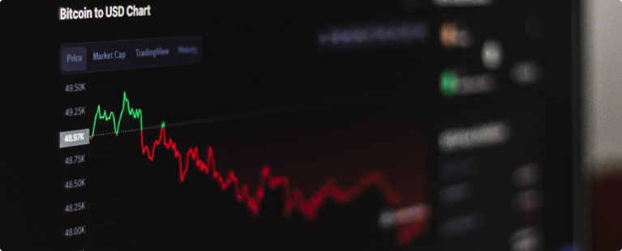

Кризис идей и слабые результаты приводят к закрытию криптофондов
Согласно данным от швейцарского инвестиционного консультанта 21e6 Capital AG, около 13% крипто-хедж-фондов закрылись в 2023 году из-за слабой доходности и трудностей с доступом к банковским услугам.
Средняя доходность криптофондов составила 15,2% за первую половину 2023 года, отставая от доходности биткоина, который вырос на 83,3% за тот же период.
Многие фонды удерживали большие денежные позиции после потрясений в отрасли в 2022 году, в том числе после краха криптовалютной биржи FTX. В результате, они упустили возможность роста биткоина в этом году, сообщается в полугодовом отчете швейцарского консультанта.
Фонды с рыночно-нейтральными стратегиями показывают самые слабые результаты, средняя доходность которых составляет всего 6,8%. Фонды, делающие направленные ставки, в среднем достигают доходности 21,9%.
Многие из этих фондов ищут новых партнеров для банковских услуг после закрытия дружественных к криптовалютам учреждений Silvergate Capital Corp. и Signature Bank. Нормативная неопределенность и сложности с безопасными биржами и хранителями также создают трудности для этих фондов.
Некоторые фонды закрылись после потери активов на рухнувших платформах, включая биржу FTX, которая была особенно популярна среди хедж-фондов и профессиональных криптотрейдеров.
Например, Galois Capital, известная своими ставками против токена Luna, закрыла свой флагманский фонд после потерь от краха биржи FTX. Инвестиционная компания BlockTower Capital также закрыла свой "рыночно-нейтральный" криптофонд, который ранее управлял более чем 100 миллионами долларов.